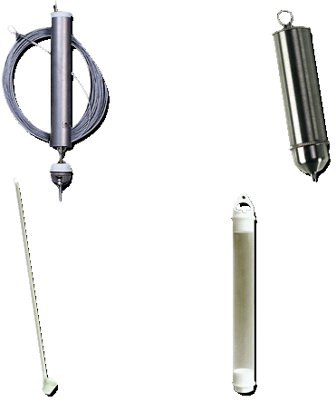

Common Sampling Devices
The following are some common devices used for grab and composite sampling.
- When the site must be accessed from a boat or a structure (such as a bridge or pier), a Kemmerer bottle or a Bacon Bomb sampler may be used to collect grab samples.
- If a sample is to be recovered from a site where direct access is limited, such as an outfall pipe or along a lagoon bank, a dip sampler may be used to collect grab samples.
- For monitoring wells, a manual bailer is generally used.
Whatever equipment is selected, you should read the manufacturer’s specifications to ensure that it meets your requirements and that you are using it properly.
